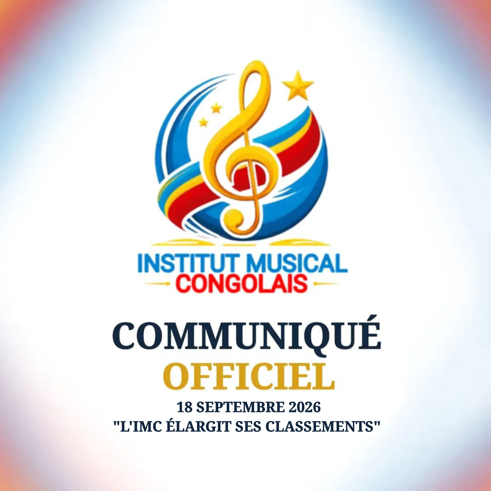

ACTUALITÉS IMC
Retrouvez les dernières informations de l'IMC
Découvrez les dernières informations, annonces et évolutions de l'Institut Musical Congolais.
LIRE L'ACTUALITÉINSTITUT MUSICAL CONGOLAIS
L'IMC est une initiative privée et indépendante qui mesure et certifie les performances musicales en République démocratique du Congo.
Valoriser les performances qui façonnent la musique congolaise.
Découvrez les performances musicales les mieux classées en République démocratique du Congo.
L'IMC délivre trois types de certifications musicales selon le territoire de performance pris en compte.
Les certifications IMC sont déterminées selon une méthodologie fondée sur les performances musicales enregistrées sur les plateformes suivies par l'IMC.
1 500 IES = 1 IEV
IEV — IMC ÉQUIVALENTS VENTES
1 stream = 1 IES
IES — IMC ÉQUIVALENTS STREAMS
Retrouvez la dernière actualité publiée par l'Institut Musical Congolais.

ACTUALITÉS IMC
Découvrez les dernières informations, annonces et évolutions de l'Institut Musical Congolais.
LIRE L'ACTUALITÉL'IMC remercie ses partenaires pour leur contribution au développement et à la visibilité de la mesure des performances musicales en RDC.
Pour toute demande d'information, de certification ou de partenariat, contactez l'Institut Musical Congolais.
institutmusicalcongolais@gmail.com NOUS CONTACTERINSTITUT MUSICAL CONGOLAIS
Mesurer. Certifier. Valoriser.
© 2026 Institut Musical Congolais